One real high-risk patient, worked end-to-end: the recommended plan first, then exactly how the system arrived at it, stage by stage.
| age | 46 yrs |
| sex | 1 |
| fasting_blood_sugar | 0 |
| resting_bp | 150 mmHg |
| cholesterol | 231 mg/dL |
| max_heart_rate | 147 bpm |
| oldpeak | 3.6 mm ST-depression |
| exercise_angina | 0 |
| slope | 2 |
Risk dropped 53.0 percentage points via one clinically admissible, real-value-verified recourse step. Real changes made:
path length: 1 hop(s) · clinical effort: 14.94 · search cost: 7.743
The model scored this patient at 75.0% predicted risk based on their recorded values above. The single biggest driver of this risk score was oldpeak (increasing risk by 0.264 on the model's own scale). Other contributing factors, in order: age (-0.052), resting_bp (+0.026), max_heart_rate (+0.026).
| oldpeak | +0.2645 |
| age | -0.0524 |
| resting_bp | +0.0256 |
| max_heart_rate | +0.0256 |
| exercise_angina | -0.0126 |
| fasting_blood_sugar | +0.0052 |
Before searching for a plan, the patient's record was mapped into a compact mathematical space where clinically similar real patients sit close together — not by looking at any single number in isolation, but by how the whole combination of their values resembles other real people in the training data. This positioning is what let the system find the closest genuinely comparable patients in the next stage.
Of the 7 closest real patients in the training data (by latent-space distance), 6 were clinically blocked from being used as a recourse target. The one actually chosen (patient #225) was the 7th-closest candidate overall. Distance here is measured in a way that accounts for how much a patient's actual clinical picture would change, not just raw numeric closeness — so the target ultimately chosen was the CLOSEST patient that was also clinically admissible, even though closer-but-blocked candidates existed.
| Candidate | Status | Riemannian dist. | Euclidean dist. | Reason if blocked |
|---|---|---|---|---|
| #236 | blocked | 0.016 | 0.140 | [R-LIPID-DIRECTION] cholesterol: Total cholesterol must trend downward or hold stable under lipid-management goals [CHOL2018].; [R-AGE-HORIZON] age: Single recourse step limited to <= 3.05 years, a clinically realistic follow-up interval for risk recalculation (structural constraint, matches the original benchmark's own single-step horizon rule).; [R-IMMUTABLE] sex: Immutable clinical attribute cannot be altered by a recourse action (structural constraint, not a guideline citation). |
| #114 | blocked | 0.016 | 0.154 | [R-LIPID-DIRECTION] cholesterol: Total cholesterol must trend downward or hold stable under lipid-management goals [CHOL2018]. |
| #165 | blocked | 0.018 | 0.171 | [R-AGE-HORIZON] age: Single recourse step limited to <= 3.05 years, a clinically realistic follow-up interval for risk recalculation (structural constraint, matches the original benchmark's own single-step horizon rule). |
| #124 | blocked | 0.021 | 0.076 | [R-DIRECTIONAL-OTHER] max_heart_rate: Feature must trend in its clinically admissible direction.; [R-AGE-HORIZON] age: Single recourse step limited to <= 3.05 years, a clinically realistic follow-up interval for risk recalculation (structural constraint, matches the original benchmark's own single-step horizon rule). |
| #185 | blocked | 0.030 | 0.199 | [R-LIPID-DIRECTION] cholesterol: Total cholesterol must trend downward or hold stable under lipid-management goals [CHOL2018].; [R-IMMUTABLE] sex: Immutable clinical attribute cannot be altered by a recourse action (structural constraint, not a guideline citation). |
| #2 | blocked | 0.031 | 0.129 | [R-DIRECTIONAL-OTHER] max_heart_rate: Feature must trend in its clinically admissible direction.; [R-LIPID-DIRECTION] cholesterol: Total cholesterol must trend downward or hold stable under lipid-management goals [CHOL2018].; [R-DIRECTIONAL-OTHER] exercise_angina: Feature must trend in its clinically admissible direction. |
| #225 ← chosen | admissible | 0.271 | 0.392 | — |
chosen edge: Riemannian distance 0.2713, Euclidean distance 0.3916
Every proposed change was checked against a set of named clinical guideline rules before being accepted. For this specific step, every applicable rule passed:
Among every admissible candidate, the search chose real training patient #225 because it was the lowest-cost (closest, cheapest-effort) option that passed every guideline rule — the closer, cheaper-looking candidates shown above were rejected specifically because they failed one or more rules, not considered at all.
No reconstruction guesswork was used anywhere in this result: this patient's own recorded values, and the recorded values of training patient #225, were compared directly — never passed through the decoder and reconstructed. The feature changes shown above are the real recorded difference between two actual people's data, not a VAE approximation of either.
What was surfaced back to this patient: their risk score and its main drivers (stage 1), the specific plan and why each step is guideline-admissible (stages 4-5), and the named real-world interventions above — so the plan is not just "reach these numbers" but tied to concrete, cited actions a clinician could actually prescribe.
CARE-LG's own numbers: the real graph search on its own, and what an additional directed synthetic search recovers on top for patients the real search cannot resolve. Real-value CVR stays 0.00% throughout — the synthetic add-on adds zero constraint violations.
| Dataset | CARE-LG (real search) | CARE-LG (+ synthetic add-on, final) | Real CVR (final) |
|---|---|---|---|
| UCI Heart | 38.5% | 40.9% ± 11.8 | 0.00% |
| Real NHANES | 50.9% | 55.1% ± 3.9 | 0.00% |
| Dataset | Seed | n high-risk | n attempted by synthetic add-on | Recovered | Recovered % |
|---|---|---|---|---|---|
| uci | 0 | 25 | 15 | 3 | 20.0% |
| uci | 1 | 20 | 6 | 0 | 0.0% |
| uci | 2 | 23 | 10 | 0 | 0.0% |
| uci | 3 | 22 | 13 | 0 | 0.0% |
| uci | 4 | 23 | 11 | 0 | 0.0% |
| nhanes_real | 0 | 420 | 166 | 14 | 8.4% |
| nhanes_real | 1 | 445 | 173 | 23 | 13.3% |
| nhanes_real | 2 | 422 | 162 | 20 | 12.3% |
| nhanes_real | 3 | 430 | 171 | 15 | 8.8% |
| nhanes_real | 4 | 439 | 148 | 18 | 12.2% |
Success % (found any plan) and real-value CVR % (of successes, how many violated a real constraint). Baselines report high success by allowing unsafe transitions the corrected CARE-LG gate rejects.
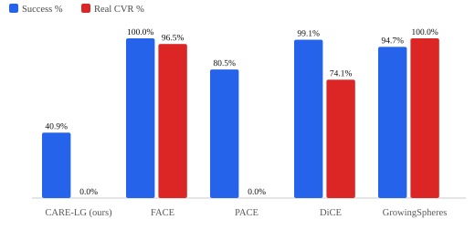
CARE-LG is the only method with zero real-value constraint violations; every baseline reaches higher success at the cost of unsafe recommendations.
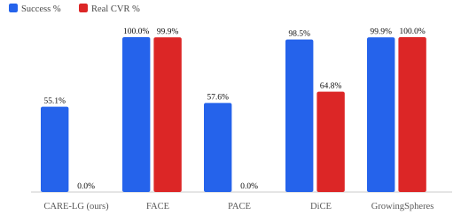
CARE-LG is the only method with zero real-value constraint violations; every baseline reaches higher success at the cost of unsafe recommendations.
Bottom-right is the target region: high success, zero real CVR. CARE-LG is the only method near the safe axis; every other method buys higher success with real constraint violations.
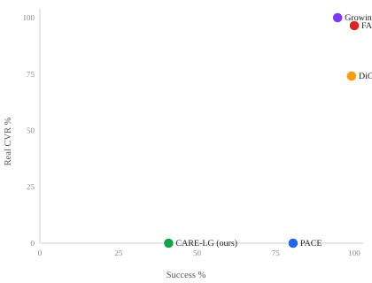
Only CARE-LG sits near the safe, zero-CVR axis; every other method buys success with real constraint violations.
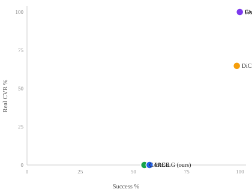
Only CARE-LG sits near the safe, zero-CVR axis; every other method buys success with real constraint violations.
B1: entry-gate asymmetry (query's first edge checked by a weaker rule than interior edges). B2: real, already-known patients were decoded through the VAE before checking constraints, masking real violations as reconstruction noise. Fixing both drops real CVR to exactly 0.00% at the honest cost of success rate (previously-accepted-but-invalid patients are now correctly rejected).
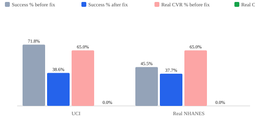
Fixing the entry-gate and decode-before-check bugs drops real CVR to exactly 0% at the honest cost of a lower success rate.
For every high-risk patient who receives no plan: exhaustive feature-space check + two densification probes (2x k-NN, +500 VAE-prior synthetic nodes) classify the abstention as certified infeasible (no safe plan exists), confirmed blindspot (search failure), or unresolved.
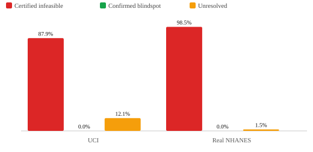
Nearly every abstention is a proven infeasibility, not a search failure the system could have avoided.
Real 2-hop path found by the corrected hard-mode Riemannian search (UCI, seed 2, patient #13). Every hop is a real, already-known training patient; every edge satisfies every clinical constraint.
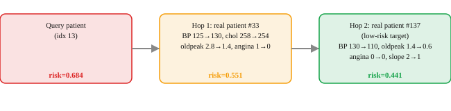
A real two-hop path between actual recorded patients, with every hop independently clinically admissible.
The same fixed clinical rule checklist, applied to two REAL candidate edges from the patient walkthrough above: one admitted, one rejected. Regression-verified: this symbolic checker agrees 100% with the hardcoded predicate across 2000 sampled pairs per dataset, both datasets.
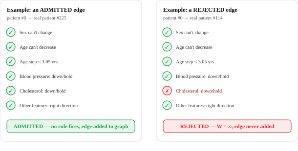
Same checklist, two real candidates for the same patient: one clears every rule, the other fails on a named, cited constraint.
Documented property of each method's own design: does the recommendation match an actual recorded person, or an optimized/sampled point that may not correspond to anyone real? CARE-LG and FACE guarantee the former; the other three do not.
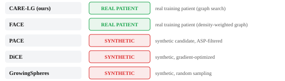
CARE-LG and FACE recommend the real recorded values of an actual patient; the other three optimize a synthetic point that may not correspond to anyone real.
Real per-patient computation, both datasets, all 5 seeds, using the same search as every other final number in this report. Age split at the median of each dataset's high-risk cohort.
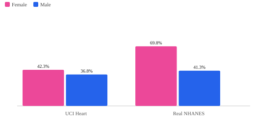
Success rate is real but uneven by sex, most notably a large gap on Real NHANES worth investigating further.
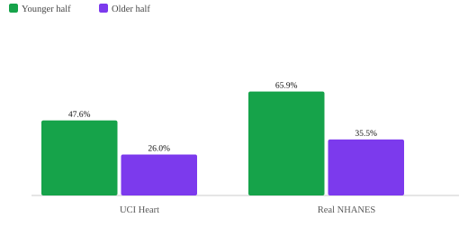
Older patients succeed more often, an expected effect of the age-aware target definition, not a flaw.
Every candidate real-patient edge the search actually considered for the worked patient at the top of this page (not just the winning path) — green: admissible; red dashed: rejected for violating a constraint; gold: the chosen lowest-cost admissible edge.
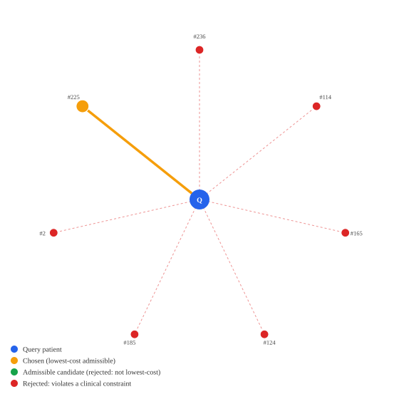
Most nearby candidates are rejected for a constraint violation; the chosen target is the closest one that passes every rule.
| Dataset | n certified infeasible checked | Genuine ceiling (no improvement possible) | Recoverable in principle |
|---|---|---|---|
| uci | 62 | 0.0% | 100.0% |
| nhanes_real | 1325 | 25.0% | 75.0% |